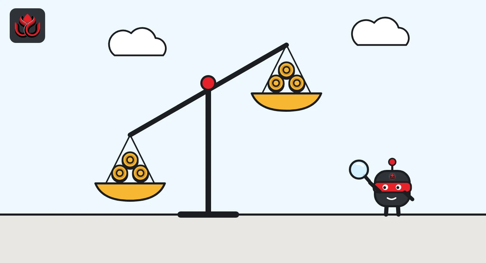

USDC is the first of 45 EU stablecoins called 'significant.' What changes on November 12?
The European Banking Authority has classified Circle's USDC as a significant e-money token under MiCA, the first in the EU. From November 12, 2026, the EU banking watchdog takes direct charge of the reserves that back it.
Key points
- On October 14, 2026, the EBA named Circle's EU-issued USDC the first "significant" e-money token under MiCA, out of 45 notified in the EU.
- From November 12, 2026, the EBA directly supervises USDC's reserves, capital, liquidity and redemption plans. France's ACPR keeps governance checks.
- Nothing changes for holders on day one, but the assets that back each token now get the EU's toughest oversight.
What the EBA decided
The European Banking Authority (EBA) said on October 14, 2026, that it has classified USDC as a significant e-money token under the EU's Markets in Crypto-Assets Regulation (MiCA). An e-money token, or EMT, is MiCA's name for a stablecoin that tracks a single official currency, such as the US dollar or the euro.
The token in question is the USDC issued in the EU by Circle Internet Financial Europe SAS, the French arm of Circle. USDC is also issued in the United States by Circle Internet Financial, LLC. The EBA said it reached its decision after checking USDC against the criteria set out in MiCA.
It is a first for the EU. In the regulator's own words, "USDC is the first one to be classified as being significant." The EBA counts 45 EMTs notified under MiCA in the EU.
Who supervises what from November 12
The label changes who watches the token. Until now, France's Autorité de contrôle prudentiel et de résolution (ACPR) has supervised Circle's EU entity on its own. From November 12, 2026, USDC moves into what MiCA calls dual supervision for significant EMTs.
According to the EBA, the split looks like this:
- Moving to the EBA: own funds (the capital Circle must hold), the reserve of assets backing each token, liquidity requirements, and recovery and redemption plans.
- Staying with the ACPR: governance, qualifying holdings (who owns large stakes), fit-and-proper assessments of managers, outsourcing and conflicts of interest.
The EBA said it will work with the ACPR to make the handover smooth. It also works through supervisory colleges set up under Article 119 of MiCA, which bring together the authorities that have an interest in a large token.
How a token earns the label
MiCA lets the EBA classify a stablecoin as significant under Articles 43 and 56. The test uses indicators laid down in Commission Delegated Regulation (EU) 2024/1506. The EBA did not publish which indicators USDC met or the values it measured.
The status is not permanent. The EBA said it reviews the classification every year, so a token can in principle lose the label. The dual supervision itself comes from Article 117 of MiCA.
The EBA also signed a memorandum of understanding with the New York State Department of Financial Services (NYDFS). The EBA said the deal supports cooperation and information exchange on cross-border stablecoin activity. USDC is issued in the United States by Circle Internet Financial, LLC, so the two supervisors now have a formal channel on a token that lives on both sides of the Atlantic.
How big USDC is
USDC is the second-largest stablecoin in the world. Its market value was about $71.5 billion on November 2, 2026, according to CoinGecko, against about $180.1 billion for Tether's USDT, also per CoinGecko. All stablecoins tracked by rwa.xyz totaled about $286.2 billion on November 1, down 2.9% in 30 days. These are global figures. The EBA did not publish how much USDC circulates in the EU.
Put another way, USDC is roughly a quarter of the whole stablecoin market. USDT is about two and a half times its size.
Stablecoin supply, start of November 2026
US$ billion
Sources: CoinGecko USDC, CoinGecko USDT, rwa.xyz. Approximate global supply.

Timeline
ESMA tells crypto firms not to serve stablecoins that fail MiCA rules
EBA classifies USDC as the first significant e-money token in the EU and signs an MoU with NYDFS
Dual supervision begins: EBA takes over reserves, capital, liquidity and recovery plans
EBA reviews whether USDC still meets the significance criteria
What it means for USDC holders
For people who hold or trade USDC in Europe, nothing changes on day one. The token is still issued by the same French entity. What changes is the depth of oversight on the parts that protect holders most directly: the reserve assets and the plan for paying people back if something goes wrong.
The move also lands in a busy month for stablecoin policy in the EU. On October 8, the EU securities regulator ESMA said in a formal opinion that crypto firms should not provide services for stablecoins that are not MiCA compliant, and gave firms with legacy exposure up to three months to fix it. USDC, by contrast, now sits inside the strictest part of the MiCA rulebook.
LC Insight analysis
This section is our reading of the facts above, not a statement of fact.
- We think the label is a badge as much as a burden. Being the first stablecoin watched directly by the EBA gives USDC a status in Europe that rivals without a MiCA license cannot claim.
- This is the test case for how the EBA and a national watchdog share one issuer. How smoothly the handover from France's ACPR goes after November 12 will set the template for the next significant tokens.
- The deal with New York's regulator shows supervisors expect big stablecoins to stay global. We expect more such cross-border agreements as other large issuers seek MiCA authorization.
What's next
- The November 12, 2026, start of EBA supervision and any first public statements from the EBA on USDC reserves
- Whether any of the other notified EMTs crosses the significance threshold
- Circle's own disclosures on how it will meet the stricter significant EMT requirements
Disclaimer. This article is based on public information and the sources listed below as of the update time shown. It is for information only and is not investment, legal or tax advice. Figures may change as companies and authorities publish new data.
Sources
- EBA, press release: The EBA classifies USDC as the first significant e-money token in the European Union (October 14, 2026)
- EBA, newsletter notice on the USDC classification (October 14, 2026)
- ESMA, Opinion on crypto-asset services for non-MiCA-compliant ARTs and EMTs (October 8, 2026)
- CoinGecko, USDC (November 2, 2026)
- CoinGecko, Tether USDT (November 2, 2026)
- rwa.xyz, stablecoin dashboard (November 1, 2026)